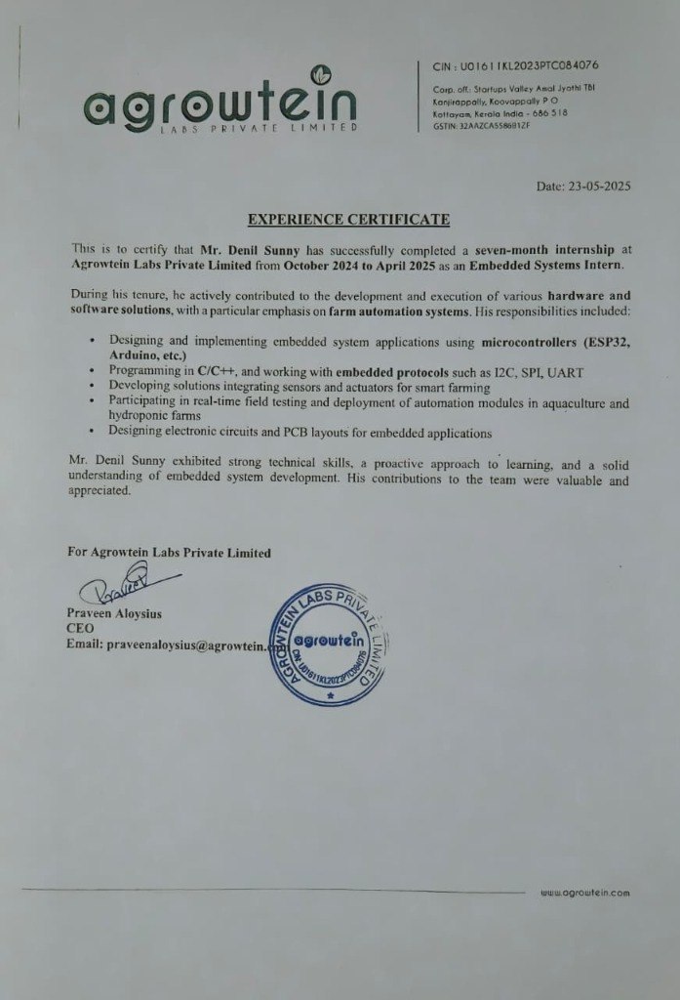
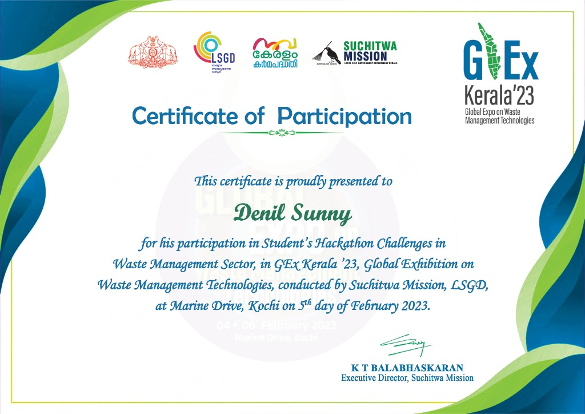
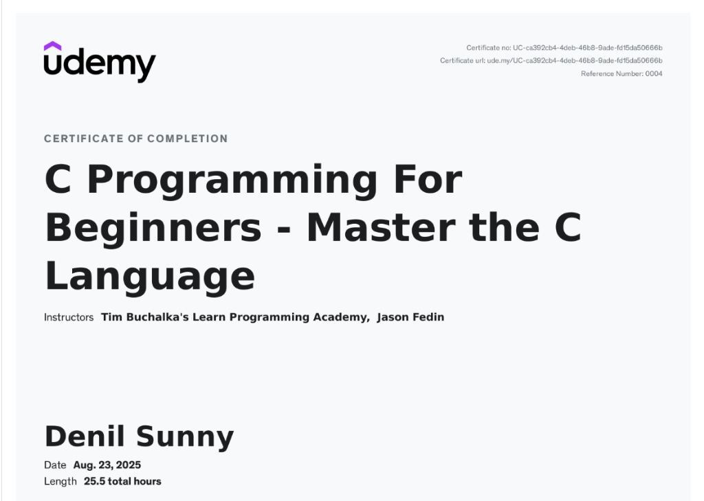

I specialize in
embedded systems, PCB design, and electronic hardware development,
turning ideas into reliable, practical products. My experience spans
schematic design,
PCB layout,
firmware development,
sensor integration, and
hardware debugging
across microcontroller-based systems and IoT applications.
Recognised as a State and District Level
Winner under the theme Business Model Innovation & Future
Technologies, awarded by K-DISC — Kerala Development and Innovation
Strategic Council, Government of Kerala.
K-DISC /
Govt. of KeralaJuly 2023

💼 Experience Certificate
Embedded Systems Internship — Agrowtein Labs
Completed a 7-month internship as an
Embedded Systems Intern, contributing to hardware & software
solutions for farm automation — including ESP32/Arduino firmware, I²C/SPI/UART
protocols, sensor integration, PCB design, and real-time deployment of
aquaculture & hydroponic automation modules.
Agrowtein Labs Pvt. Ltd.Oct 2024 – Apr 2025

🌿 Innovation Award
Global Waste Management Expo — GEx Kerala '23
Awarded for an innovative waste management
idea presented at the Students' Hackathon Challenge in Waste
Management Sector, conducted by Suchitwa Mission, LSGD, Government of
Kerala, at Marine Drive, Kochi.
Kerala
Suchitwa MissionFeb 2023

🎓 Course Completion
C Programming For Beginners — Master the C Language
Completed a comprehensive 25.5-hour course on
C programming, covering memory management, pointers, data structures, and
low-level programming fundamentals essential for embedded systems development.
From-scratch quadcopter with custom MOSFET motor drivers, 3D-printed airframe, and ESP-Drone
flight firmware — spanning embedded, mechanical, and PCB disciplines in one build.
Raspberry Pi 4 • Pi Camera • TensorFlow Lite • RFID • ESP32
AI-powered hands-free cart that follows its owner using real-time person detection, avoids
obstacles autonomously, and checks out items via RFID — all wirelessly.
6-DoF IMU-driven gimbal that uses sensor fusion to compute real-time orientation and commands
three servo motors for continuous, disturbance-rejecting balance.
Compact 2D drawing machine created by repurposing DVD player linear mechanisms. Receives G-code wirelessly over Wi-Fi via an ESP32 to drive dual steppers and a pen-lift servo.
Compact 3-axis CNC plotter designed and fabricated with custom 3D-printed structural components. Controlled by an Arduino Uno driving three 28BYJ-48 stepper motors through ULN2003AN modules for precise X, Y, and Z-axis automated plotting.
Autonomous robot fusing IR line-sensing and ultrasonic obstacle detection to navigate
predefined routes while dynamically avoiding real-time obstructions.
Smart Fish Water Quality Monitoring: Developed a real-time fish pond water
monitoring system using ESP32 and LoRa-based master-slave communication to ensure a healthy
aquatic environment.
Fish Feeding System: Developed a system to minimize feed waste by
accurately controlling the quantity and timing of food dispensed.
AI-Based Algae Detection: Developed a custom machine learning dataset/model
to estimate algae content and implemented a mechanism to reduce algae levels automatically.
Developed a compact system to monitor temperature, humidity, CO2 levels in real time,
specifically to optimize environmental conditions for efficient mushroom cultivation.